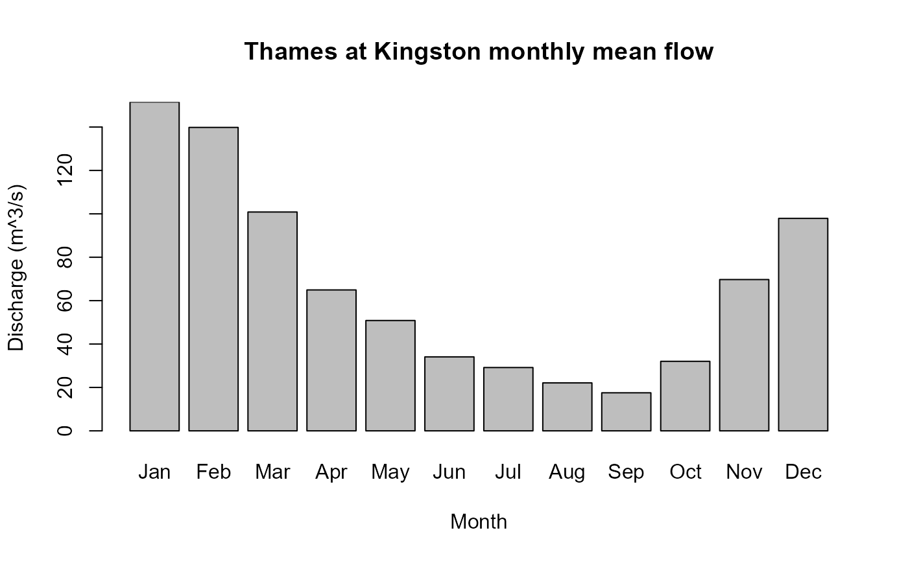
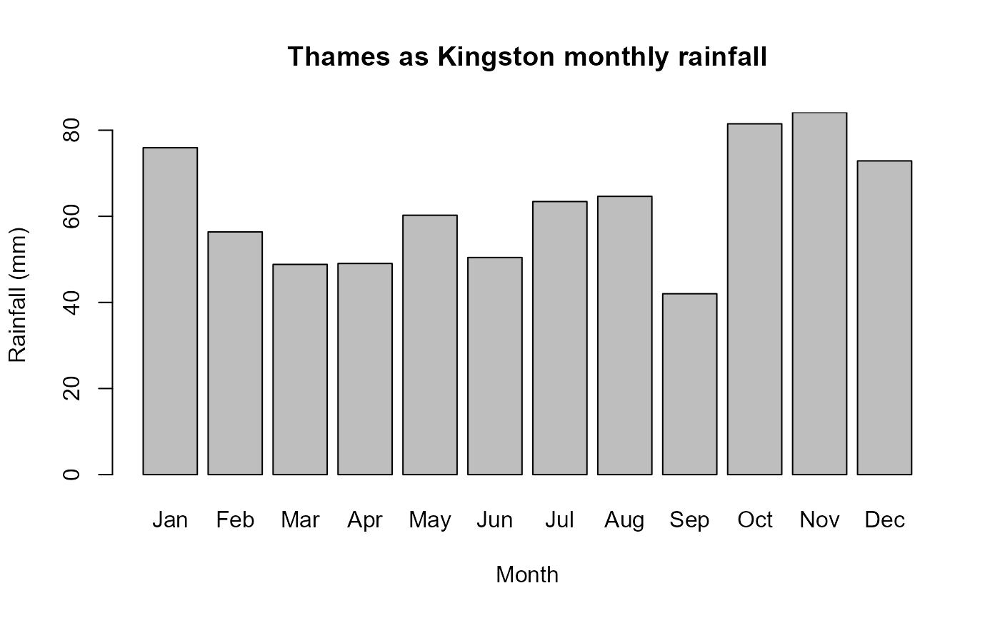

Derives monthly statistics from a data.frame with Dates or POSIXct in the first column and variable of interest in the second
Usage
MonthlyStats(
x,
Stat,
AggStat = NULL,
TS = FALSE,
Plot = FALSE,
ylab = "Magnitude",
main = "Monthly Statistics",
col = "grey"
)Arguments
- x
a data.frame with Dates or POSIXct in the first column and numeric vector in the second.
- Stat
A user chosen function to calculate the statistic of interest; mean or sum for example. Could be a user developed function.
- AggStat
the aggregating statistic. The default is mean. The function applied must have an na.rm argument (base R stat functions such as mean, max, and sum all have an na.rm argument.).
- TS
A logical statement with a default of FALSE. If TRUE, instead of a dataframe of monthly statistics and average statistics, a monthly time series is returned.
- Plot
logical argument with a default of FALSE. If TRUE the monthly statistics are plotted.
- ylab
A label for the y axis of the plot. The default is "Magnitude"
- main
A title for the plot. The default is "Monthly Statistics"
- col
A choice of colour for the bar plot. A single colour or a vector (a colour for each bar).
Value
A list with two elements. The first element is a data.frame with year in the first column and months in the next 12 (i.e. each row has the monthly stats for the year). The second element is a dataframe with month in the first column and the associated aggregated statistic in the second. i.e. the aggregated statistic (default is the mean) for each month is provided. However, of TS = TRUE, a monthly time series is returned - as a dataframe with date in the first column and monthly value in the second.
Details
The statistic of interest for each month is calculated for each calendar year in the data.frame. An aggregated result is also calculated for each month using an aggregating statistic (the mean by default). The data.frame is first truncated at the first occurrence of January 1st and last occurrence of December 31st.
Examples
# Get the mean flows for each month for the Thames at Kingston
qm_on_thames <- MonthlyStats(ThamesPQ[, c(1, 3)],
Stat = mean,
ylab = "Discharge (m^3/s)", main = "Thames at Kingston monthly mean flow", Plot = TRUE
)

# Get the monthly sums of rainfall for the Thames at Kingston
pm_on_thames <- MonthlyStats(ThamesPQ[, c(1, 2)],
Stat = sum,
ylab = "Rainfall (mm)", main = "Thames as Kingston monthly rainfall", Plot = TRUE
)
